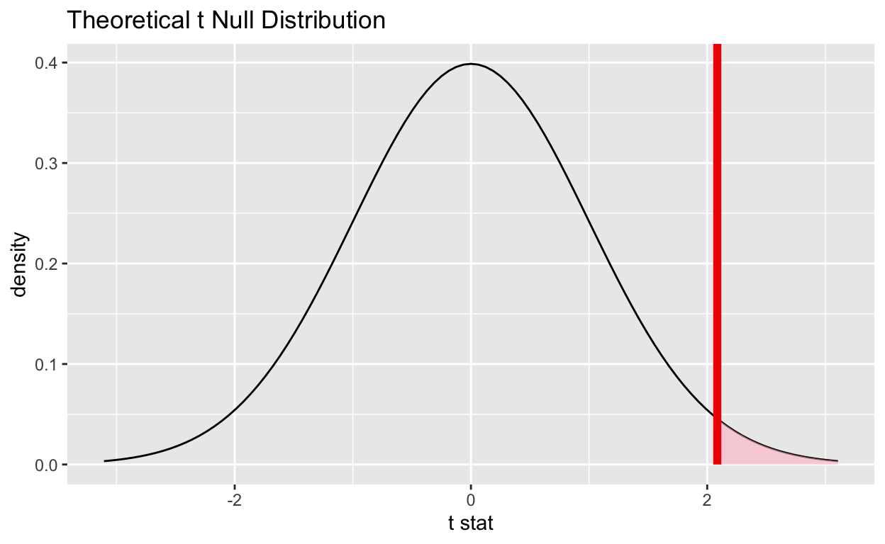

In this tutorial you will learn the basics of CLT-based inference using the infer package. To begin we load the necessary packages. Remember, if you haven’t already installed infer, do that first.
install.package("infer")library(tidyverse)
library(infer)Recall the Central Limit Theorem. For a population with mean \(\mu\) and standard deviation \(\sigma\) the distribution of \(\bar{X}\) is normal, centered at \(\mu\), and with variability inversely proportional to the square root of the sample size.
\[Z = \frac{\bar{X} - \mu}{\sigma/\sqrt{n}} \sim N(0,1)\]
We often don’t know \(\sigma\) so we estimate from our sample data using \(s\). The test statistic below has a \(t\)-distribution with \(n-1\) degrees of freedom.
\[T = \frac{\bar{X} - \mu}{s/\sqrt{n}} \sim t_{n-1}\]
Relative to the normal distribution, the \(t\) distribution has thicker tails to make up for the additional variability incurred by using \(s\) to estimate \(\sigma\).
We will use the gss data from the infer package. This data set contains a sample of 500 entries from the General Social Survey (GSS). The GSS is a national survey of American society and opinions that has been conducted since 1972.
First, familiarize yourself with the data set and variables using the code below. You can learn more about the General Social Survey by visiting their website.
?gssWe will focus on the hours variable, the number of hours worked in the week before the survey, truncated at 89. We are interested in determining if the sample data provide convincing evidence that Americans, on average, work more than 40 hours per week.
Let’s first conduct a brief exploratory data analysis. Begin by creating a well-labeled histogram of the number of hours worked per week.
ggplot(data = gss, aes(x = hours)) +
geom_histogram(binwidth = 2) +
labs(x = "Hours Worked Per Week", y = "Count")Next, calculate summary statistics for the number of hours worked per week, including the sample mean xbar, standard deviation s, and sample size n. Store the results in hours_summary.
hours_summary <- gss %>%
summarize(
xbar = mean(hours),
s = sd(hours),
n = n()
)
hours_summaryDoes the sample data provide convincing evidence that Americans, on average, work more than 40 hours per week?
We first write out the appropriate null and alternative hypothesis.
We will calculate the test statistic step-by-step. First pull our summary data from hours_summary.
n <- hours_summary %>% pull(n)
s <- hours_summary %>% pull(s)
xbar <- hours_summary %>% pull(xbar)Next, we calculate the standard error using s and n.
se <- s / sqrt(n)Then, we use the sample mean xbar and the standard error se to calculate the test statistic.
t <- (xbar - 40) / seThe test statistic is about 2.09.
df <- n - 1And the degrees of freedom is 499.
Finally, we use the test statistic t and the pt() function in R to find the \(p\)-value.
pt(t, df, lower.tail = FALSE)## [1] 0.0187798The \(p\)-value is small, so we reject the null hypothesis. These data provide sufficient evidence at \(\alpha = 0.05\) to conclude that Americans, on average, work more than 40 hours per week.
We can use the visualize function from the infer package to plot the CLT-based null distribution. We indicate the test statistic with a red vertical line and shade the region corresponding to the \(p\)-value in red.
clt_based_null_distribution <- gss %>%
specify(response = hours) %>%
hypothesize(null = "point", mu = 40) %>%
calculate(stat = "t")
clt_based_null_distribution %>%
visualize(method = "theoretical") +
shade_p_value(t, direction = "greater")
Next we construct a confidence interval for the mean. Do you expect the confidence interval to include 40?
t_star <- qt(.95, df)
xbar + c(-1, 1) * t_star * se## [1] 40.28981 42.47419We are 95% confident that the true average hours worked per week for adult Americans is between 40.29 and 42.47.
Instead of coding each step individually every time we want to do a hypothesis test, we can use the t_test function from the infer package to conduct a \(t\)-test. To do this we need to specify the following:
x: a tibbleresponse: the variable in x that serves as the responsemu: the hypothesized null mean valueconf_int: a logical value indicating whether to include a confidence intervalconf_level: the confidence levelt_test(
x = gss,
response = hours,
mu = 40,
conf_int = FALSE,
alternative = "greater",
conf_level = 0.95
)We reject the null hypothesis. These data provide sufficient evidence using \(\alpha = 0.05\) to conclude that Americans, on average, work more than 40 hours per week.
The GSS asks respondents to report their age at the time of the survey. Do these data provide convincing evidence that the average age of American adults is greater than 30?
Calculate summary statistics and store the sample size as n, the standard deviation as s and the sample mean as xbar.
Use the summary statistics and standard error to calculate the test statistic.
Calculate the \(p\)-value.
age_summary <- gss %>%
summarize(
xbar = mean(age),
s = sd(age),
n = n()
)
n <- age_summary %>% pull(n)
s <- age_summary %>% pull(s)
xbar <- age_summary %>% pull(xbar)
se <- s/sqrt(n)
t <- (xbar - 30) / se
t
df <- n - 1
pt(t, df, lower.tail = FALSE)t_test function from the infer package.t_test(
x = gss,
response = age,
mu = 30, alternative = "greater"
)t_test function from the infer package to test if Americans with a college degree work the same number of hours per week as Americans without a college degree. Remember, if you are confused about a function you can pull up the documentation using ?t_test.t_test(
x = gss,
formula = hours ~ college,
order = c("degree", "no degree"),
alternative = "two-sided"
)